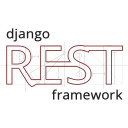

Timeline de Experiencia
Agronorte (John Deere)
Software Engineer (Internal Systems)
Desarrollo y evolución de sistemas internos orientados a optimizar operaciones logísticas en entornos de alta demanda, priorizando escalabilidad, rendimiento y mantenibilidad. Desarrollo de un portal de gestión de informes y análisis de flota para clientes, incorporando visualización de rendimiento, métricas operativas y exportación de reportes personalizados, facilitando la toma de decisiones. Actualmente, desempeño un rol enfocado en la integración de análisis de compras con el desarrollo de herramientas internas, optimizando procesos de abastecimiento, control de stock y toma de decisiones. Colaboración transversal con áreas clave del negocio para implementar soluciones con impacto operativo.
LYM Desarrollo Web
Full Stack Developer
Desarrollo de soluciones web para clientes, abarcando el ciclo completo del producto desde la definición de requerimientos hasta la implementación. Enfoque en traducir necesidades de negocio en aplicaciones funcionales, priorizando usabilidad, rendimiento y entrega continua de valor.
Stack Tecnológico
Engine Core & Tooling

Django
OpenCodeProjects
Selected_Output// Agronorte · John Deere
Titan — Plataforma de Pedidos
Shop interno multiusuario.
Repuestos Import Platform
Gestión y seguimiento de importación.
Sistema de Balanceos
Automatización de balanceo de stock entre sucursales.
Bot de Remesas de Pagos
Automatización de flujo de pagos.
Agronorte NG — Frontend
Interfaz Angular para gestión interna.
Agronorte NG — Backend API
API REST en Django.
Tableros de Repuestos
Dashboards de métricas.
+40% de eficiencia en procesos de importación y ahorro de 20hs/semana mediante automatización.
System_Integrity: 100% // Area: Repuestos_Core
Featured Projects
Mascotas San Justo
Plataforma social comunitaria para mascotas perdidas, adopción y donaciones. Panel admin con aprobación de publicaciones, autenticación con límite de intentos, Supabase Storage.
LYM Desarrollo Web
Sitio institucional real con dominio propio para agencia web. Optimización de performance, cache busting, integración con Google Search Console.
Concesionario Premium
Catálogo de vehículos de alta gama con carga optimizada y filtros avanzados para una experiencia de usuario premium.
Academic Projects
Sistema RFID — Control de Acceso
Prototipo de control de acceso con tecnología RFID. Frontend + API server propios.
Sistema de Colectivos
Frontend + backend para gestión de líneas de colectivos y trazabilidad de rutas.
LeonesApp — Club Deportivo
Suite de aplicaciones (móvil y desktop) para gestión integral de club deportivo.
Competencias Clave
Core Competencies
Formación Académica
Instituto Superior de Profesorado N°20
San Justo, Santa Fe
Técnico Superior en Soporte de Infraestructura de la Información
Formación especializada en administración de sistemas, redes, soporte técnico y gestión de infraestructura IT.
Instituto Superior de Profesorado N°20
San Justo, Santa Fe
Técnico Superior en Desarrollo de Software
Formación en análisis, diseño y desarrollo de sistemas de software, metodologías ágiles y buenas prácticas de programación.
Habilidades Interpersonales
Soft Skills